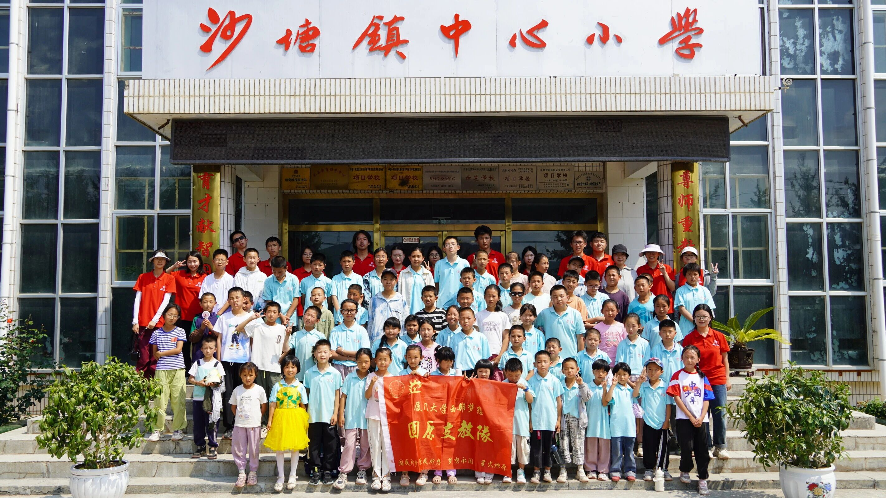
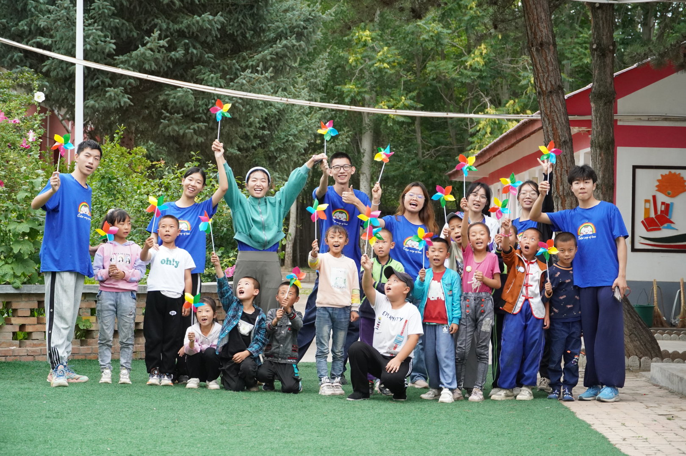
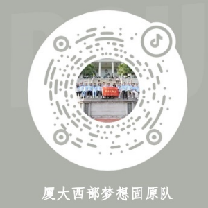

2025年支教活动

2024年支教活动

2023年支教活动
固原支教队
固我所梦，原我所想，梦想永固，星火燎原
队伍介绍
厦门大学西部梦想社团固原队是由厦大学子组建的短期支教志愿团队，自2009年3月成立以来，始终秉持教育帮扶初心，已先后在多地开展支教活动：
- 固原市彭阳小岔九年制义务中学
- 固原市西吉县姚庄小学
- 固原市西吉县田坪中学
- 贵州省黔西南州望谟县牛场小学
- 固原市隆德县杜川小学
- 固原市隆德县沙塘镇中心小学
团队致力于为乡村学生提供涵盖课内基础知识与素质拓展的多元课堂，用知识与爱心助力孩子们的成长。
队伍结构
历经多年发展，固原队已形成完善的治理体系与教学架构，实现了管理专业化、教学多元化的发展目标。
管理体系：队长团分工协作，下设四大职能组承接核心事务，保障队伍高效运转。
遴选机制：新成员需通过个人能力、教学水平等多维度评比，历经四个月考核后方可正式加入。
教学体系：设置三大基础学科组与两大素质拓展组，兼顾知识巩固与兴趣培养。
队伍结构详情
人员规模架构
| 队长 | 1名 | 往届成员 |
| 副队长 | 3-4名 | |
| 队员 | 14名左右 | 待选拔新成员 |
核心组织架构
| 组别 | 具体内容 |
|---|---|
| 学科组 | 语文、数学、英语、文艺、百科 |
| 职能组 | 财务组、联络组、影宣组、文宣组 |
职能组分工详情
| 职能组 | 名称 | 任务 |
|---|---|---|
| 财务组 | 神算子事务所 | 会计、出纳、采购、预算表、决算表、物资采购、发票管理等财务相关 |
| 联络组 | 天机办公室 | 策划大团建、安排夜训、安排课表与实地安排表 |
| 影宣组 | 固梦工作室 | 影像拍摄、视频剪辑、海报制作、视频平台宣传运营 |
| 文宣组 | 原梦工作室 | 文案写作、推送制作、日常微博运营、微信公众号运营 |
队伍培训
1. 选拔
团队招募从3月份西部梦想社团内部大会开始，至6月份第15个教学周结束。团队招募将分别历经"招募新成员""教案试讲培训""策划能力锻炼""中期试讲考核""终期试讲考核"五大环节，最终通过综合考核结合面试表现确定最终的入队名单。拟招募14名新成员。
时间线安排
| 时间 | 教案 | 试讲 | 策划 |
|---|---|---|---|
| 第二周 | 分队大会，招募新成员 | ||
| 第三周 | 新成员破冰、介绍固原队历史与组织架构 | ||
| 第四周 | 提交教学大纲 | ||
| 第五周 | 完善教学大纲 | 试讲教学框架 | 策划第一次队伍团建 |
| 第六周 | 教案撰写培训 | 试讲培训 | |
| 第七周 | 第一篇教案 | 第一次试讲 | 第一次团建 |
| 第八周 | 第二篇教案 | 第二次试讲 | |
| 第九周 | 第三篇教案 | 第三次试讲 | 策划第二次队伍团建 |
| 第十周 | 中期试讲考核（初筛） | ||
| 第十一周 | 第五篇教案 | 第五次试讲 | 第二次团建 |
| 第十二周 | 第六篇教案 | 第六次试讲 | |
| 第十三周 | 终期试讲考核（终筛） | 策划第三次队伍团建 | |
| 第十四周 | 面试，确定最终名单 | ||
| 第十五周 | 第三次团建 | ||
在社团统一组织举行分队大会后，加入固原队的新队员将通过双向选择进入其所对应的学科组，并在学科组负责人（对应队长团中的一人）的指导下完成贯穿整个长学期的试讲，大部分时间内其需要一周完成一篇教案、一次20分钟的试讲。为充分调动新队员积极性并保证教学质量，负责人将在学期中将设置一次集中考核，并根据实际教学情况淘汰一部分浑水摸鱼的成员。之后，为考察新队员的团队协作能力、创新能力，队长团将在继续安排新成员组成团队撰写策划案。完成以上流程后，再经过面试，明确每个人的性格特点、具体身体情况、想去支教的原因、具体能力和支教意愿的坚定度后，最终确定前往实地教学的队员。
选拔标准
| 指标 | 占比 | 评判标准 | 得分明细 | 得分 |
|---|---|---|---|---|
| 教学能力 | 30% | 基于平时教案的撰写与试讲情况对新成员的支教能力进行评价 | 教案质量（15%） 试讲情况（15%） |
|
| 团队协作能力 | 30% | 依据几次团建的组织情况与小组任务的完成情况，通过组内成员互评的方式评价新成员的团队协作能力 | 策划参与度（10%） 组内互评（10%） 队长团评（10%） |
|
| 支教意愿 | 20% | 从队员关于试讲过程、队伍内部活动的出勤率、参与程度进行支教意愿的评估 | 出勤率（10%） 试讲参与率（10%） |
|
| 个人特长 | 10% | 队员个人特长加分，如视频剪辑等 | 个人能力（10%） | |
| 面试 | 10% | 通过面试深入评估新成员的其他表现 | 面试表现（10%） | |
| 总得分 | ||||
2. 磨合
在新成员选拔结束后，队长团将提前联系对接小学的校长，明确实地学生情况，根据学生人数安排课程表和课程数量。同时寻找基金会，保证队伍资金运转；规划行程路线，确保队伍出行安全，组织每周一次的例会。
普通队员需要完成每周两次的交叉试讲，并且听别的学科组队员试讲至少一次，努力提升教学能力和教学质量。同时，普通队员需要轮流组织夜训策划，完成每周2-3次的夜训，在提高身体素质的同时培养团队精神；同时将组队进行实地活动和班级见面会的策划，并在每周的例会上进行展示。
磨合安排
| 时间 | 周一 | 周二 | 周三 | 周四 | 周五 | 周六 |
|---|---|---|---|---|---|---|
| 一二节 | 外语组试讲 思维组听讲 |
外语组试讲 思维组听讲 |
文学组试讲 | |||
| 三四节 | 文学组试讲 | 文学组试讲 | 外语组听讲 | |||
| 中午 | 外语组听讲 | 百科组听讲 | 例会 | |||
| 五六节 | 文艺组试讲 百科组听讲 |
百科组试讲 文学组听讲 |
百科组试讲 文学组听讲 |
|||
| 七八节 | 思维组试讲 文艺组听讲 |
思维组试讲 文艺组听讲 |
||||
| 夜晚 | 夜训 | 夜训 | 夜训 |
3. 培训
| 时间 | 主题 | 人次 | 培训内容 |
|---|---|---|---|
| 3月19日 | 团队、基本认知 | 50 | 对于团队、讲课的基本认知，日程安排、教案撰写的要求、教学分组 |
| 3月26日 | 教案、试讲培训 | 30 | 教案撰写、讲课技巧、数学分组 |
| 5月21日 | 科技、环保活动策划培训和撰写 | 30 | 确定活动内容、公损撰写技巧、环保活动策划案 |
| 5月25日 | 支教的意义感悟会 | 30 | 对支教意义进行思考，深刻理解要去做什么 |
| 5月30日 | 社团干训 | 30 | 了解社团，能力培养和观察，最终社团换届 |
| 6月5日 | 科技、环保课程探讨会 | 20 | 探讨科技和环保课程的具体教学内容和教学方式 |
| 7月2日 | 团队建设 | 20 | 队长组织破冰团建，促进新队员相互认识 |
| 7月4日 | 沟通技能培训 | 20 | 对实地队员进行沟通技能培训 |
| 6月28日-7月13日 | 科技、环保活动策划展示 | 20 | 各提案展示对比及讨论，并对策划案进行修改 |
| 7月1日-7月14日 | 教学技能展开培训 | 20 | 对实地队员进行教学技能培训 |
| 7月15日-7月19日 | 宣传培训 | 8 | 对宣传组队员进行重点培训 |
| 7月15日-7月19日 | 健康卫生 | 3 | 对后勤负责人、安全员和卫生员进行培训 |
| 6月24日-7月21日 | 体训 | 20 | 对实地队员进行更强化的体能锻炼 |
支教地简介
支教队目前支教的地点是宁夏回族自治区固原市隆德县沙塘镇中心小学。
学校基本情况
地理位置：位于宁夏固原市隆德县沙塘镇，属于典型的西部乡村学校。
硬件设施：学校拥有计算机室、科学实验室等现代化教学设施，但部分设施存在利用率不高的情况。
师资情况：存在专业师资短缺的问题，特别是在艺术、科技等拓展类课程方面。
学生与教育现状
学生特点：学生多为留守儿童或来自周边乡村，部分孩子因家庭结构原因存在强烈的情感表达需求。
教育观念：部分家长存在"重分数轻成长"的传统观念，也存在着部分重男轻女现象。
课程需求：学校在艺术、科技、心理健康等素质教育课程方面有较大需求，这也是支教队重点补充的方向。
队伍宣传
固原队始终坚持在扎实开展支教工作、做好队伍建设与教学服务的同时，积极对外传递支教声音、讲好支教故事，展现青年学子的责任担当与公益初心。
目前，队伍已建立起覆盖多平台的官方宣传矩阵，在微信公众号、微信视频号、微博、抖音、哔哩哔哩、小红书等主流内容平台均设有官方账号，定期发布队伍动态、支教纪实、课程成果、队员感悟与乡村儿童成长故事，用文字与影像记录支教路上的温暖与力量。
我们真诚欢迎社会各界关注厦门大学西部梦想社团固原支教队，与我们一同见证成长、传递温暖、共筑梦想。
微信公众号

抖音
微博：厦门大学西部梦想社团固原队
视频号：西梦固原
小红书：厦大西梦固原支教队
Bilibili：西梦固原
赞助方
长期以来，固原支教队始终与学校、地方单位及社会各界爱心组织保持良好合作，各项支教活动的顺利开展离不开各方的鼎力支持。在此，谨向长期关心与支持我们的单位及企业致以最诚挚的感谢：
- • 厦门大学
- • 共青团隆德县委员会
- • 中国大学生知行促进计划
- • 知行计划・西门子爱绿教育计划（第七、八届）
- • 知行计划・立邦为爱上色中国大学生农村支教奖（第七届）
- • 快乐学习
- • "鹏青杯" 大学生社会公益创投大赛（第一、二、三届）
更多合作单位与赞助详情，欢迎关注固原支教队官方微信公众号，获取最新动态与完整名单。
荣誉墙
- • 2025年厦门大学校重点优秀社会实践队伍
- • 2025西门子爱绿教育计划中国大学生社会实践项目（全国铜奖）
- • "榜样100"大学生社团优秀案例
- • 2024年厦门大学校重点优秀社会实践队伍
- • 2024西门子爱绿教育计划中国大学生社会实践项目（全国银奖）
- • 2024西门子爱绿教育计划中国大学生社会实践项目（最佳课程奖）
- • "榜样100"大学生社团优秀案例
- • 2023年厦门大学校重点优秀社会实践队伍
- • 2023年第九届厦门大学社会实践调研报告大赛（三等奖）
- • 2023第七届立邦为爱上色中国大学生农村支教奖（全国优秀奖）
- • 2023第七届立邦为爱上色中国大学生农村支教奖（最佳视频奖）